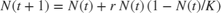
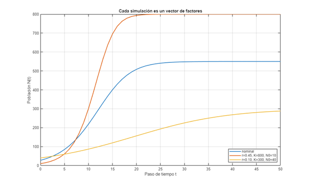
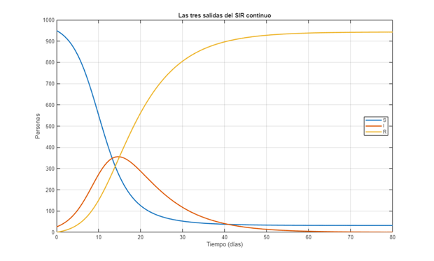
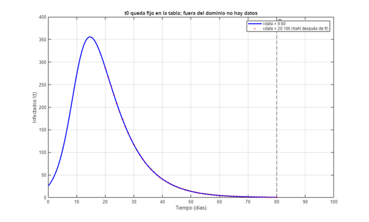
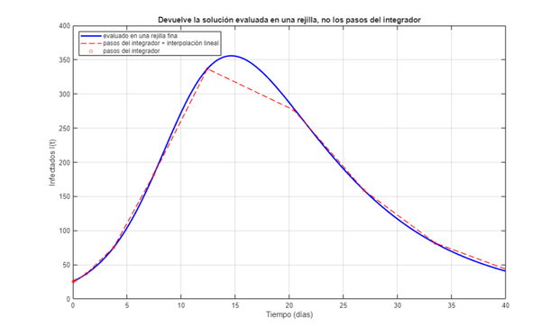
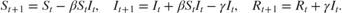

Módulo 00: Cómo se escribe un modelo para GSUA-CSB (MATLAB)
Curso guiado de GSUA-CSB
Todo el curso (muestreo, incertidumbre, sensibilidad, estimación) trabaja sobre un modelo de usuario: una función que tú escribes. La toolbox no ve tus ecuaciones; solo llama a esa función con un vector de factores y lee lo que devuelve. Este módulo enseña ese contrato paso a paso, en espejo con la versión Python (mismas secciones, mismos modelos, mismos resultados):
- la firma del modelo y la forma de su salida;
- el orden de los factores: primero los parámetros, después las condiciones iniciales;
- un modelo discreto (un bucle) y uno continuo (un integrador de EDO evaluado en una rejilla);
- cómo se declaran los rangos, los nombres de los factores y de las salidas, qué guarda la toolbox del modelo y cómo se evalúa;
- los errores típicos (firma, nombres de salidas, orientación, rejilla, pasos del integrador, unidades);
- un ejercicio: programar un SIR discreto desde cero.
El código completo de cada modelo aparece en la página tal como está en su archivo.
Contents
- 1. Configuración del entorno
- 2. El contrato de un modelo de usuario
- 3. Paso 1 — un modelo discreto: la logística
- 4. Paso 2 — declararlo ante la toolbox: rangos, nombres de factores y de salidas
- 5. Paso 3 — evaluarlo
- 6. Paso 4 — un modelo continuo: el SIR
- 7. Fijar un factor: rango degenerado
- 8. Errores típicos
- 9. Comprobar tu modelo antes de usarlo
- 10. Ejercicio: programa un SIR discreto desde cero
- 11. Resumen: lista de chequeo
1. Configuración del entorno
clc; clear; close all; % --- Localización portable de la toolbox GSUA-CSB --------------------------- % Si la toolbox ya está instalada (.mltbx), sus funciones están en el path. % Si no, se busca dentro del repositorio clonado y en ubicaciones habituales. if isempty(which('gsua_dataprep')) candidatos = { fullfile(fileparts(mfilename('fullpath')), '..', '..', '..', 'Functions') % dentro del repo clonado fullfile(getenv('USERPROFILE'), 'MATLAB Drive', 'Toolbox', 'Functions') fullfile(getenv('USERPROFILE'), 'Documents', 'MATLAB', 'GSUA-CSB', 'Functions') }; for k = 1:numel(candidatos) if isfolder(candidatos{k}), addpath(candidatos{k}); break; end end if isempty(which('gsua_dataprep')) error(['No se encontró la toolbox GSUA-CSB en el path de MATLAB. ' ... 'Instala GSUA-CSB.mltbx o añade su carpeta Functions con addpath(...).']); end end % Los modelos de este módulo viven junto a este script (y los que tienen % errores a propósito, en errores/). aqui = fileparts(mfilename('fullpath')); addpath(aqui, fullfile(aqui, 'errores'));
2. El contrato de un modelo de usuario
En MATLAB un modelo de usuario es un archivo .m propio (por ejemplo mi_modelo.m), en el path, con una función de esta firma:
sol = mi_modelo(pars, domain, opt)
Entradas
- pars: vector con los factores. La posición manda: pars(1) es el factor de la fila 1 de los rangos, pars(2) el de la fila 2, etc. Convención del curso: primero los parámetros, después las condiciones iniciales.
- domain: [t0, tf], el intervalo de simulación. Es el que declaras con 'domain' en gsua_dataprep; la toolbox no lo cambia, así que la condición inicial vale siempre en t0 = domain(1).
- opt: opciones del modelo que no son factores; llega lo que pases con 'opt' en gsua_dataprep. Aunque no lo uses, declara el argumento (~).
Salida: una estructura con dos campos
- sol.x: vector de tiempos, 1 x Nt, de t0 a tf;
- sol.y: matriz salidas x tiempo (nSalidas x Nt): una fila por salida, en el mismo orden de los nombres de salida.
Después, gsua_eval interpola linealmente sol.y en los tiempos que le pidas (xdata). Por eso sol.x debe cubrir todo el dominio y ser lo bastante fino.
En Python el contrato es func(pars, domain, **opt), pero domain es la rejilla misma de puntos pedidos, la función devuelve un arreglo (salidas, tiempo) evaluado en esos puntos y nadie interpola por ti.
3. Paso 1 — un modelo discreto: la logística

, con tres factores: r, K (parámetros) y N0 (condición inicial). Un bucle avanza un paso de tiempo por iteración. Este es el archivo logistica_discreta.m completo:function sol = logistica_discreta(pars, domain, ~) % LOGISTICA_DISCRETA Crecimiento logístico en tiempo discreto (modelo de usuario). % % sol = logistica_discreta(pars, domain, opt) % % Ecuación en diferencias: N(t+1) = N(t) + r*N(t)*(1 - N(t)/K) % % Factores, en este orden (primero parámetros, después condición inicial): % pars(1) -> r : tasa de crecimiento por paso (adimensional) % pars(2) -> K : capacidad de carga (individuos) % pars(3) -> N0 : población en t0 (individuos) % % domain = [t0, tf]: lo fija 'domain' en gsua_dataprep. % El tercer argumento (opt) no se usa aquí, pero DEBE declararse: % gsua_eval siempre llama al modelo con tres argumentos. % % Salida: sol.x (1 x Nt) con los pasos t0:tf % sol.y (1 x Nt) con N(t): una fila por salida. r = pars(1); K = pars(2); N0 = pars(3); t = domain(1):domain(2); % un punto por paso de tiempo N = zeros(1, numel(t)); % 1 salida -> 1 fila N(1) = N0; for k = 1:numel(t)-1 N(k+1) = N(k) + r*N(k)*(1 - N(k)/K); end sol.x = t; sol.y = N; end
Antes de dárselo a la toolbox, llámalo tú a mano y mira las formas:
sol = logistica_discreta([0.3; 500; 10], [0 50], []); fprintf('sol.x: %d x %d (tiempos t0:tf)\n', size(sol.x)); fprintf('sol.y: %d x %d (1 salida x %d tiempos)\n', size(sol.y), numel(sol.x)); fprintf('N(0) = %.1f, N(50) = %.1f\n', sol.y(1), sol.y(end));
sol.x: 1 x 51 (tiempos t0:tf) sol.y: 1 x 51 (1 salida x 51 tiempos) N(0) = 10.0, N(50) = 500.0
4. Paso 2 — declararlo ante la toolbox: rangos, nombres de factores y de salidas
gsua_dataprep recibe el nombre del archivo (texto, no un handle) y una matriz de rangos Np x 2 con [mínimo, máximo] por fila. La fila i corresponde a pars(i) y a names{i}: las tres listas van en el mismo orden. out_names nombra las filas de sol.y, también en orden.
rangos_log = [
0.05, 0.50; % r (parámetro)
100, 1000; % K (parámetro)
5, 50 % N0 (condición inicial, al final)
];
[T_log, ~] = gsua_dataprep('logistica_discreta', rangos_log, ...
'domain', [0 50], ...
'names', {'r', 'K', 'N0'}, ...
'out_names', {'Poblacion'});
Setting environment to work with user-defined function
El resultado T es una tabla: una fila por factor libre, con su rango y su valor nominal (por defecto, el punto medio del rango). Lo demás que necesita la toolbox va en las propiedades de la tabla. Todas las funciones del curso (gsua_dmatrix, gsua_ua, gsua_sa, gsua_pe...) leen el modelo desde aquí.
disp(T_log) P = T_log.Properties.CustomProperties; fprintf('Solver : %s\n', func2str(P.Solver)); fprintf('Kind : %d (5 = función de usuario con dominio)\n', P.Kind); fprintf('Domain : [%g %g]\n', P.Domain); fprintf('Vars : %s (nombres de salida)\n', strjoin(P.Vars, ', ')); fprintf('output : %s (salidas activas)\n', mat2str(P.output));
Range Nominal
____________ _______
r 0.05 0.5 0.275
K 100 1000 550
N0 5 50 27.5
Solver : @(pars,domain,opt)user_func(pars',domain,opt)
Kind : 5 (5 = función de usuario con dominio)
Domain : [0 50]
Vars : Poblacion (nombres de salida)
output : 1 (salidas activas)
5. Paso 3 — evaluarlo
y = gsua_eval(par, T, xdata, ydata, parallel, show, verbose). par es Np x N: una columna por simulación. Los cuatro últimos argumentos son opcionales; aquí los ponemos para no graficar ni imprimir progreso. La salida tiene forma N x numel(xdata) x nSalidasActivas.
En Python es al revés: M es N x Np (una fila por simulación) y la salida de evaluate_batch es N x salidas x tiempo.
xdata = 0:50; y_nom = gsua_eval(T_log.Nominal, T_log, xdata, [], false, false, false); fprintf('una simulación : size(y) = %s\n', mat2str(size(y_nom))); par3 = [T_log.Nominal, [0.45; 800; 10], [0.10; 300; 40]]; % 3 columnas = 3 simulaciones y3 = gsua_eval(par3, T_log, xdata, [], false, false, false); fprintf('tres simulaciones: size(y) = %s\n', mat2str(size(y3))); figure('Name', 'Logística discreta'); plot(xdata, y3', 'LineWidth', 1.5); xlabel('Paso de tiempo t'); ylabel('Población N(t)'); grid on; legend('nominal', 'r=0.45, K=800, N0=10', 'r=0.10, K=300, N0=40', 'Location', 'southeast'); title('Cada simulación es un vector de factores');
una simulación : size(y) = [1 51] tres simulaciones: size(y) = [3 51]

6. Paso 4 — un modelo continuo: el SIR
Un modelo continuo resuelve sus EDO dentro de la función. El patrón es:
- integrar con ode45 sobre domain;
- evaluar la solución con deval en una rejilla fina y regular;
- devolver esa rejilla en sol.x y los estados en sol.y (estados x tiempo).
Factores: beta, gamma (parámetros), S0, I0 (condiciones iniciales). Salidas: S, I y R, en ese orden de filas. Archivo sir_continuo.m completo:
function sol = sir_continuo(pars, domain, opt) % SIR_CONTINUO Modelo epidémico SIR en tiempo continuo (modelo de usuario). % % sol = sir_continuo(pars, domain, opt) % % dS/dt = -beta*S*I % dI/dt = beta*S*I - gamma*I % dR/dt = gamma*I % % Factores, en este orden (primero parámetros, después condiciones iniciales): % pars(1) -> beta : tasa de transmisión (1/(persona*día)) % pars(2) -> gamma : tasa de recuperación (1/día) % pars(3) -> S0 : susceptibles en t0 (personas) % pars(4) -> I0 : infectados en t0 (personas) % R(t0) = 0 no es un factor: es una constante del modelo. % % domain = [t0, tf] en días. % opt.dt (opcional) = separación de la rejilla de salida, en días (0.1 por defecto). % % Salida: sol.x (1 x Nt) rejilla t0:dt:tf % sol.y (3 x Nt) filas = salidas [S; I; R] beta = pars(1); gamma = pars(2); y0 = [pars(3); pars(4); 0]; dt = 0.1; if isstruct(opt) && isfield(opt, 'dt') dt = opt.dt; end rhs = @(t, y) [ -beta*y(1)*y(2); beta*y(1)*y(2) - gamma*y(2); gamma*y(2) ]; ode = ode45(rhs, domain, y0, odeset('RelTol', 1e-6, 'AbsTol', 1e-8)); % ode45 avanza con pasos adaptativos y desiguales. deval evalúa su % interpolante de alto orden en una rejilla fina y regular; así la % interpolación lineal que hace gsua_eval después es casi exacta. sol.x = domain(1):dt:domain(2); sol.y = deval(ode, sol.x); % 3 x Nt end
sol = sir_continuo([4.5e-4; 0.125; 950; 25], [0 80], struct('dt', 0.5)); fprintf('sol.x: %d x %d, sol.y: %d x %d (S, I, R x tiempo)\n', size(sol.x), size(sol.y));
sol.x: 1 x 161, sol.y: 3 x 161 (S, I, R x tiempo)
Al declararlo, out_names tiene tres nombres porque sol.y tiene tres filas. Lo que pases con 'opt' llega tal cual como tercer argumento del modelo: aquí, la separación de la rejilla de salida.
rangos_sir = [
1e-4, 8e-4; % beta (1/(persona*día))
0.05, 0.20; % gamma (1/día)
900, 999; % S0 (personas)
1, 50 % I0 (personas)
];
[T_sir, ~] = gsua_dataprep('sir_continuo', rangos_sir, ...
'domain', [0 80], ...
'names', {'beta', 'gamma', 'S0', 'I0'}, ...
'out_names', {'S', 'I', 'R'}, ...
'opt', struct('dt', 0.1));
xs = linspace(0, 80, 161);
y_sir = gsua_eval(T_sir.Nominal, T_sir, xs, [], false, false, false);
fprintf('tres salidas activas: size(y) = %s\n', mat2str(size(y_sir)));
M = gsua_dmatrix(T_sir, 5); % 5 x Np: una fila por muestra
Y5 = gsua_eval(M', T_sir, xs, [], false, false, false); % gsua_eval quiere Np x N
fprintf('gsua_dmatrix: %s -> gsua_eval: %s\n', mat2str(size(M)), mat2str(size(Y5)));
Setting environment to work with user-defined function tres salidas activas: size(y) = [1 161 3] gsua_dmatrix: [5 4] -> gsua_eval: [5 161 3]
Para quedarte con una sola salida (por ejemplo, la que tienes medida), cambia output en la tabla. Afecta a todas las funciones que reciban T.
T_I = T_sir; T_I.Properties.CustomProperties.output = 2; % fila 2 de sol.y = I y_I = gsua_eval(T_I.Nominal, T_I, xs, [], false, false, false); fprintf('solo I: size(y) = %s, pico de I = %.1f personas\n', mat2str(size(y_I)), max(y_I)); figure('Name', 'SIR continuo'); plot(xs, squeeze(y_sir), 'LineWidth', 1.8); xlabel('Tiempo (días)'); ylabel('Personas'); grid on; legend('S', 'I', 'R', 'Location', 'east'); title('Las tres salidas del SIR continuo');
solo I: size(y) = [1 161], pico de I = 355.7 personas

7. Fijar un factor: rango degenerado
Si un factor no te interesa, dale un rango con mínimo = máximo. Queda fuera del muestreo y de la estimación, pero el modelo lo sigue recibiendo en su posición: pars siempre llega completo. En MATLAB el factor fijo desaparece de T, y par en gsua_eval lleva solo los factores libres.
En Python el factor sigue en el modelo y pars lleva siempre los Np factores; design_matrix mantiene constante la columna del fijo.
rangos_fijo = rangos_sir; rangos_fijo(4, :) = [10 10]; % I0 fijo en 10 [T_fijo, ~] = gsua_dataprep('sir_continuo', rangos_fijo, 'domain', [0 80], ... 'names', {'beta', 'gamma', 'S0', 'I0'}, 'out_names', {'S', 'I', 'R'}); disp(T_fijo) M_fijo = gsua_dmatrix(T_fijo, 4); fprintf('gsua_dmatrix: %s (solo factores libres)\n', mat2str(size(M_fijo))); y_fijo = gsua_eval(T_fijo.Nominal, T_fijo, xs, [], false, false, false); fprintf('el modelo recibió I0 = 10 en pars(4): I(0) = %.1f\n', y_fijo(1, 1, 2));
Setting environment to work with user-defined function
Range Nominal
________________ _______
beta 0.0001 0.0008 0.00045
gamma 0.05 0.2 0.125
S0 900 999 949.5
gsua_dmatrix: [4 3] (solo factores libres)
el modelo recibió I0 = 10 en pars(4): I(0) = 10.0
8. Errores típicos
(a) Firma. En MATLAB, gsua_eval llama siempre al modelo con tres argumentos. La guía de usuario muestra modelos modelo(pars, domain) y gsua_dataprep los acepta, pero al evaluar fallan. Declara el tercero aunque no lo uses (~). (En Python el error equivalente es pasar opt a una función que no tiene argumento para recibirlo.)
function sol = logistica_dos_entradas(pars, domain) % LOGISTICA_DOS_ENTRADAS La logística discreta declarada con DOS argumentos. % % Solo existe para el módulo 0: gsua_dataprep la acepta, pero gsua_eval % llama al modelo como modelo(pars, domain, opt) y falla con % "Too many input arguments". La versión correcta es LOGISTICA_DISCRETA. r = pars(1); K = pars(2); t = domain(1):domain(2); N = zeros(1, numel(t)); N(1) = pars(3); for k = 1:numel(t)-1 N(k+1) = N(k) + r*N(k)*(1 - N(k)/K); end sol.x = t; sol.y = N; end
[T_mal, ~] = gsua_dataprep('logistica_dos_entradas', rangos_log, 'domain', [0 50]); try gsua_eval(T_mal.Nominal, T_mal, xdata, [], false, false, false); catch err fprintf('logistica_dos_entradas -> error: %s\n', err.message); end
Setting environment to work with user-defined function logistica_dos_entradas -> error: Too many input arguments.
(b) Los nombres de salida no coinciden con las filas. Los nombres de salida no reordenan nada: solo nombran las filas, en orden. Si declaras una sola salida llamada 'I' para un modelo cuya fila 1 es S, la toolbox analiza S con la etiqueta 'I' y no da ningún error.
[T_etiq, ~] = gsua_dataprep('sir_continuo', rangos_sir, 'domain', [0 80], ... 'out_names', {'I'}); y_etiq = gsua_eval(T_etiq.Nominal, T_etiq, xs, [], false, false, false); fprintf('salida etiquetada ''I'': valor inicial %.1f (es S0, no I0)\n', y_etiq(1));
Setting environment to work with user-defined function salida etiquetada 'I': valor inicial 949.5 (es S0, no I0)
(c) Orientación. La convención es salidas x tiempo. En MATLAB, desde la versión 1.13, si devuelves tiempo x salidas la toolbox lo transpone, porque reconoce el eje del tiempo por numel(sol.x); si hay tantas salidas como tiempos no puede saberlo y la deja como está. En Python nadie la corrige. No dependas de la corrección: devuelve la salida bien orientada.
function sol = sir_transpuesto(pars, domain, opt) % SIR_TRANSPUESTO El SIR continuo devolviendo sol.y transpuesta (tiempo x salidas). % % Solo existe para el módulo 0: desde la versión 1.13 gsua_eval la % transpone sola (reconoce el eje del tiempo por numel(sol.x)), salvo % que haya tantas salidas como tiempos. No dependas de esa corrección. sol = sir_continuo(pars, domain, opt); sol.y = sol.y.'; % Nt x 3: MAL end
[T_T, ~] = gsua_dataprep('sir_transpuesto', rangos_sir, 'domain', [0 80], ... 'out_names', {'S', 'I', 'R'}, 'output', 2); y_T = gsua_eval(T_T.Nominal, T_T, xs, [], false, false, false); fprintf('sir_transpuesto con output = 2: size(y) = %s, I(0) = %.1f <- MATLAB la corrigió\n', ... mat2str(size(y_T)), y_T(1));
Setting environment to work with user-defined function sir_transpuesto con output = 2: size(y) = [1 161], I(0) = 25.5 <- MATLAB la corrigió
(d) La rejilla de evaluación y t0. La condición inicial pertenece a un t0 fijo, no al primer punto que pidas. En MATLAB t0 = domain(1) queda fijado en T: puedes pedir xdata desde el día 20 sin problema, pero los puntos fuera de [t0, tf] salen NaN porque no hay simulación ahí. En Python no hay NaN (el modelo integra hasta donde le pidas), y el riesgo es el contrario: integrar desde domain[0], que hace "arrancar" la epidemia en el primer punto pedido.
x20 = 20:100; y20 = gsua_eval(T_I.Nominal, T_I, x20, [], false, false, false); fprintf('xdata = 20:100 con domain = [0 80]: I(20) = %.1f; %d valores NaN (días 81 a 100)\n', ... y20(1), sum(isnan(y20))); figure('Name', 'Rejilla de evaluación'); plot(xs, y_I, 'b-', 'LineWidth', 2); hold on; plot(x20, y20, 'ro', 'MarkerSize', 3); xline(80, 'k--', 'tf = 80'); xlim([0 100]); grid on; xlabel('Tiempo (días)'); ylabel('Infectados I(t)'); legend('xdata = 0:80', 'xdata = 20:100 (NaN después de tf)', 'Location', 'northeast'); title('t0 queda fijo en la tabla; fuera del dominio no hay datos');
xdata = 20:100 con domain = [0 80]: I(20) = 287.0; 20 valores NaN (días 81 a 100)

(e) Devolver los pasos del integrador. La estructura de ode45 tiene campos x e y con la orientación correcta, así que "funciona"; pero sol.x son los pasos adaptativos del integrador (pocos y desiguales), y gsua_eval interpola linealmente entre ellos. (En Python, solve_ivp sin t_eval hace lo mismo.) Este modelo devuelve ode45 tal cual:
function sol = sir_continuo_crudo(pars, domain, ~) % SIR_CONTINUO_CRUDO El mismo SIR que SIR_CONTINUO, pero devuelve ode45 tal cual. % % Solo existe para comparar en el módulo 0: sol.x son los pasos adaptativos % de ode45 (pocos y desiguales) y gsua_eval interpola linealmente entre ellos. beta = pars(1); gamma = pars(2); y0 = [pars(3); pars(4); 0]; rhs = @(t, y) [ -beta*y(1)*y(2); beta*y(1)*y(2) - gamma*y(2); gamma*y(2) ]; sol = ode45(rhs, domain, y0); % tolerancias por defecto end
[T_crudo, ~] = gsua_dataprep('sir_continuo_crudo', rangos_sir, 'domain', [0 80], ... 'out_names', {'S', 'I', 'R'}, 'output', 2); xf = 0:0.05:80; I_bien = squeeze(gsua_eval(T_I.Nominal, T_I, xf, [], false, false, false)); I_crudo = squeeze(gsua_eval(T_crudo.Nominal, T_crudo, xf, [], false, false, false)); ode = sir_continuo_crudo(T_crudo.Nominal, [0 80]); fprintf('ode45 crudo: %d pasos en 80 días. Error máximo en I: %.2f personas (pico %.1f)\n', ... numel(ode.x), max(abs(I_bien - I_crudo)), max(I_bien)); figure('Name', 'Pasos del integrador'); plot(xf, I_bien, 'b-', 'LineWidth', 2); hold on; plot(xf, I_crudo, 'r--', 'LineWidth', 1.2); plot(ode.x, ode.y(2, :), 'ro', 'MarkerSize', 4); xlim([0 40]); grid on; xlabel('Tiempo (días)'); ylabel('Infectados I(t)'); legend('evaluado en una rejilla fina', 'pasos del integrador + interpolación lineal', ... 'pasos del integrador', 'Location', 'northwest'); title('Devuelve la solución evaluada en una rejilla, no los pasos del integrador');
Setting environment to work with user-defined function ode45 crudo: 21 pasos en 80 días. Error máximo en I: 40.05 personas (pico 355.8)

(f) Unidades. Rangos, condiciones iniciales y dominio deben estar en las mismas unidades. En sir_continuo, beta va en 1/(persona*día) porque el término es beta*S*I con S e I en personas. Si escribes S0 e I0 como fracciones de la población (0.95, 0.025) sin cambiar beta, el número reproductivo R0 = beta*S0/gamma se hunde y la epidemia desaparece; si el dominio está en semanas y gamma en 1/día, el tiempo de recuperación queda multiplicado por 7.
b = 4.5e-4; g = 0.125; fprintf('R0 con S0 en personas (950) : %.2f\n', b*950/g); fprintf('R0 con S0 en fracción (0.95): %.4f <- mismas ecuaciones, otra escala\n', b*0.95/g);
R0 con S0 en personas (950) : 3.42 R0 con S0 en fracción (0.95): 0.0034 <- mismas ecuaciones, otra escala
9. Comprobar tu modelo antes de usarlo
verificar_modelo (ayuda del curso, no de la toolbox) llama a tu modelo una vez y revisa la firma, la forma y orientación de la salida, que cubra el dominio y que no haya NaN ni Inf. Lo que no puede ver es la precisión: el modelo crudo de (e) cumple el contrato. Úsalo cada vez que escribas un modelo nuevo. (La versión Python revisa además que el valor en un tiempo no dependa de la rejilla pedida: el error (d) de Python.)
verificar_modelo('logistica_discreta', [0.3; 500; 10], [0 50], {'Poblacion'}); verificar_modelo('sir_continuo', T_sir.Nominal, [0 80], {'S', 'I', 'R'}); verificar_modelo('logistica_dos_entradas', [0.3; 500; 10], [0 50], {'Poblacion'}); verificar_modelo('sir_transpuesto', T_sir.Nominal, [0 80], {'S', 'I', 'R'}); verificar_modelo('sir_continuo_crudo', T_sir.Nominal, [0 80], {'S', 'I', 'R'});
Revisando logistica_discreta ... ok firma sol = logistica_discreta(pars, domain, opt) info sol.x: 51 puntos; sol.y: 1 x 51; out_names: 1 ok sol.y es (salidas x tiempo) ok sol.x cubre el dominio [0, 50] ok sin NaN ni Inf => cumple el contrato Revisando sir_continuo ... ok firma sol = sir_continuo(pars, domain, opt) info sol.x: 801 puntos; sol.y: 3 x 801; out_names: 3 ok sol.y es (salidas x tiempo) ok sol.x cubre el dominio [0, 80] ok sin NaN ni Inf => cumple el contrato Revisando logistica_dos_entradas ... FALLA declara 2 entradas; gsua_eval lo llama con 3: (pars, domain, opt). Revisando sir_transpuesto ... ok firma sol = sir_transpuesto(pars, domain, opt) info sol.x: 801 puntos; sol.y: 801 x 3; out_names: 3 aviso sol.y viene (tiempo x salidas); la toolbox la transpone, pero mejor devuélvela (salidas x tiempo) ok sol.x cubre el dominio [0, 80] ok sin NaN ni Inf => cumple el contrato Revisando sir_continuo_crudo ... ok firma sol = sir_continuo_crudo(pars, domain, opt) info sol.x: 21 puntos; sol.y: 3 x 21; out_names: 3 ok sol.y es (salidas x tiempo) ok sol.x cubre el dominio [0, 80] ok sin NaN ni Inf => cumple el contrato
10. Ejercicio: programa un SIR discreto desde cero
Con un paso de un día, el SIR discreto es

- Copia sir_discreto_plantilla.m como mi_sir_discreto.m y cambia el nombre de la función en su primera línea.
- Completa el TODO del bucle con las tres ecuaciones.
- Pásalo por verificar_modelo con salidas S, I y R.
- Decláralo con los mismos rangos, nombres de factores y de salidas que sir_continuo, y el dominio [0 80].
- Evalúa el nominal y grafica I(t) junto a la de sir_continuo.
Preguntas. ¿Por qué no coinciden las dos curvas de I aunque las ecuaciones "son las mismas"? ¿Qué pasa con S si beta*S0 > 1? ¿Se conserva S + I + R en tu modelo?
La plantilla (ya cumple el contrato; solo le falta la dinámica):
function sol = sir_discreto_plantilla(pars, domain, ~) % SIR_DISCRETO_PLANTILLA Ejercicio del módulo 0: un SIR en tiempo discreto. % % Copia este archivo como mi_sir_discreto.m (y cambia también el nombre % de la función en la primera línea) y completa los TODO. % % Con un paso de un día, el SIR discreto es: % S(t+1) = S(t) - beta*S(t)*I(t) % I(t+1) = I(t) + beta*S(t)*I(t) - gamma*I(t) % R(t+1) = R(t) + gamma*I(t) % % Factores (primero parámetros, después condiciones iniciales): % pars(1) -> beta (1/(persona*día)) % pars(2) -> gamma (1/día) % pars(3) -> S0 (personas) % pars(4) -> I0 (personas) % R0 = 0 al inicio. % % Salida: sol.x (1 x Nt) = domain(1):domain(2) % sol.y (3 x Nt) = [S; I; R] beta = pars(1); gamma = pars(2); t = domain(1):domain(2); Y = zeros(3, numel(t)); % 3 salidas -> 3 filas Y(:, 1) = [pars(3); pars(4); 0]; for k = 1:numel(t)-1 S = Y(1, k); I = Y(2, k); R = Y(3, k); % TODO: escribe aquí las tres ecuaciones de actualización. % Mientras tanto la plantilla deja S, I y R constantes. Y(:, k+1) = [S; I; R]; end sol.x = t; sol.y = Y; end
La solución está en solucion/sir_discreto_solucion.m. Ábrela cuando hayas terminado.
verificar_modelo('sir_discreto_plantilla', T_sir.Nominal, [0 80], {'S', 'I', 'R'}); [T_ej, ~] = gsua_dataprep('sir_discreto_plantilla', rangos_sir, 'domain', [0 80], ... 'names', {'beta', 'gamma', 'S0', 'I0'}, 'out_names', {'S', 'I', 'R'}, 'output', 2); I_ej = gsua_eval(T_ej.Nominal, T_ej, 0:80, [], false, false, false); if all(abs(I_ej - I_ej(1)) < 1e-12) fprintf('La plantilla cumple el contrato, pero I(t) sigue constante: completa el TODO.\n'); else [Imax, k] = max(I_ej); fprintf('I(t) ya cambia: pico de %.1f personas en el día %d.\n', Imax, k - 1); end
Revisando sir_discreto_plantilla ... ok firma sol = sir_discreto_plantilla(pars, domain, opt) info sol.x: 81 puntos; sol.y: 3 x 81; out_names: 3 ok sol.y es (salidas x tiempo) ok sol.x cubre el dominio [0, 80] ok sin NaN ni Inf => cumple el contrato Setting environment to work with user-defined function La plantilla cumple el contrato, pero I(t) sigue constante: completa el TODO.
11. Resumen: lista de chequeo
- Archivo .m propio, en el path, con tres entradas: sol = f(pars, domain, opt).
- pars(i) = fila i de los rangos = names{i}: parámetros primero, condiciones iniciales después.
- sol.x de 1 x Nt que cubre [t0, tf]; sol.y de nSalidas x Nt, filas en el orden de out_names.
- Discreto: un bucle de t0 a tf. Continuo: ode45 sobre domain y deval en una rejilla fina.
- gsua_dataprep('f', rangos, 'domain', ..., 'names', ..., 'out_names', ...) crea T.
- gsua_eval(par, T, xdata) con par de Np x N devuelve N x numel(xdata) x nSalidas.
- Una sola salida: T.Properties.CustomProperties.output = k. Un factor fijo: rango [v v].
En el módulo 1 estos mismos dos modelos (discrete_logistic_userdefined y sir_continuous_userdefined) se exploran con ensambles de trayectorias.